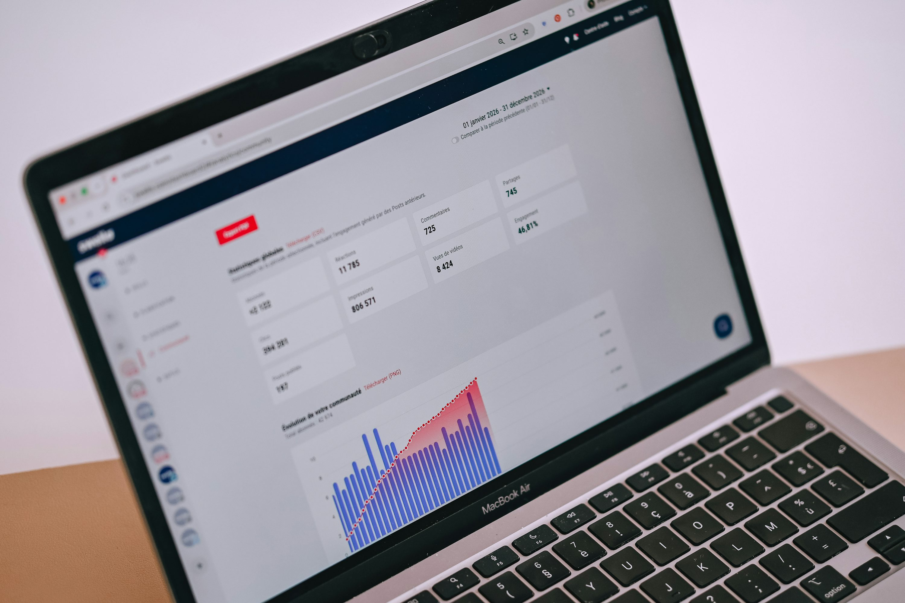

Power Analizi
Bir araştırmada veya deneyde kullanılacak örneklem büyüklüğünün (katılımcı veya gözlem sayısının) yeterli olup olmadığını hesaplamak için kullanılan istatistiksel bir yöntemdir
ÇINAR DANIŞMANLIK İSTATİSTİK MERKEZİ
Çınar Danışmanlık İstatistik Merkezi olarak, uzman SPSS istatistik analizi hizmetlerimizle öğrenci ve akademisyenlerin her zaman yanındayız.
Özellikle Sosyal Bilimler & Biyoloji alanlarında yaygın olarak kullanılan IBM SPSS programını kullanarak Lisans, Yüksek Lisans, Doktora ve Akademik Dergi için uygun seviyelerde profesyonel istatistik analizleri yapıyoruz.
Yaptığımız analizlerin sonucunda akademik formatta tablolar (APA format) oluşturuyoruz ve sonuçları yorumlayarak sizlere anlaşılır biçimde raporluyoruz.
Ücretsiz rehberlerden profesyonel danışmanlığa.
Ücretli verdiğimiz hizmetlerimizden bahsetmeye geçmeden önce, alandaki uzmanlığımızdan emin olmanız için, bu web sitesinde ücretsiz olarak yayınladığımız 100’den fazla SPSS analizi rehberinden oluşan bilgi kaynağımızdan bahsetmek istiyoruz. Bu rehberlerin hepsi bizim tarafımızdan elle manuel olarak yazılmıştır, kontrolsüz yapay zeka kullanılmamıştır ve bilimsel literatüre uygundur. Orijinal ekran görüntüleriyle desteklediğimiz SPSS analizi rehberlerimiz, SPSS’i ücretsiz olarak öğrenmek isteyen bütün üniversite öğrencileri ve akademisyenlerin kullanımına açıktır.
Türkçe ve İngilizce dillerinde SPSS analizi hizmetimiz mevcuttur.
Uzmanımız Ziynet Çınar ile, başta üniversite öğrencileri ve akademisyenlere yönelik hizmetlerimizde %100 memnuniyet hedefiyle çalışıyor ve SPSS konusunda yüzlerce öğrenci ve onlarca akademisyene yol göstermiş olmak bizi çok mutlu ediyor. Her zaman akademik standartlarda en yüksek kalitede çalışmalar sunmaya gayret ediyoruz.
Ödev yapma veya tez yazma gibi etik dışı işler yapmıyoruz. Tez veya makale yazarken istatistik analizi kısmında yetersiz kaldığınız noktada, size istatistik danışmanlık hizmetleri sunarak, öğrenmenize ve çalışmanızı başarıyla yürütmenize destek oluyoruz.Bizimle İletişime Geçip Ücret Teklifi Alın
İSTATİSTİK DANIŞMANLIĞI
spss danışmanlık profesyonel hizmetlerimiz Profesyonel SPSS Danışmanlığı hizmetimizi, SPSS kullanarak istatistiksel analizler yapmak isteyen bütün üniversite öğrencileri ve akademisyenlere sunmaktayız.
Öğrencilerin bitirme tezi veya akademisyenlerin dergi makalesi için istatistik danışmanlık hizmetleri başta olmak üzere, hizmetlerimiz her seviyede çalışma için istatistik analizi sürecinin bütün aşamalarını kapsamaktadır.
Veri analizi sürecinde başlangıçtan sonuna kadar her aşamada size yardımcı oluyor, verilerinizi doğru şekilde analiz edip yorumlamanıza katkıda bulunuyoruz.
Bir araştırmada veya deneyde kullanılacak örneklem büyüklüğünün (katılımcı veya gözlem sayısının) yeterli olup olmadığını hesaplamak için kullanılan istatistiksel bir yöntemdir
Verilerin normal dağılım gösterdiği ve aralıklı/oranlı ölçüm düzeyinde olduğu durumlarda ortalama ve varyans gibi parametreleri karşılaştırmak için kullanılan güçlü istatistiksel yöntemlerdi
Sosyal bilimler, psikoloji, biyoloji ve sağlık bilimlerindeki araştırmalar için çalışma alanına uygun analiz ve yorumlama desteği.
Veri analizinde veya istatistikte verilerin belirli bir olasılık dağılımına (örneğin normal dağılım) uyma zorunluluğu aramayan yöntemler ve testlerdir.
İki veya daha fazla kategorik değişken (sınıflandırılmış veriler) arasında anlamlı bir ilişki veya bağımlılık olup olmadığını inceleyen, parametrik olmayan bir istatistiksel test yöntemidir
Korelasyon iki değişken arasındaki ilişkinin derecesini ve yönünü ölçerken, regresyon bu ilişkiyi kullanarak bir değişkenin değerinden diğerinin gelecekteki değerini tahmin etmeyi sağlayan matematiksel bir model oluşturur.


AKADEMİK ÇALIŞMALAR
profesyonel spss analiz raporlama hizmetlerimiz
Tez yazarken bir araştırma yapıp veri toplayan öğrencilerin topladıkları verilerin istatistiksel analizi konusunda profesyonel destek sunuyoruz. Böylece öğrenciler yaptıkları araştırmadaki veri analizi sürecine ve araştırma sonuçlarına hakim oluyor; tezlerini en doğru şekilde yazmaya devam edebiliyorlar.
Yaptıkları araştırmayı akademik dergide yayınlamak isteyen akademisyenler için de profesyonel istatistik analizi danışmanlığı sunarak, hocalarımızın yaptıkları araştırmadan maksimum verim almasını sağlıyoruz.
SPSS ile verileri analiz ediyor, sonuçları tablolar ve grafiklerle zenginleştiriyor, akademik kılavuzlara uygun raporlama yapıyoruz.
Profesyonel istatistik danışmanlık hizmetlerimizle veri analizi sürecinin doğru ve güvenilir bir şekilde yürütülmesini sağlıyoruz.
UYGULAMALI ÖĞRENME
temel ve ileri seviye spss eğitimleri Üniversite öğrencileri, akademisyenler ve özel sektör çalışanları için özelleştirilmiş SPSS eğitimi hizmetleri de sunuyoruz. Eğitimlerimizde teorik içerik ve uygulamalı pratik beraber anlatarak istatistiksel veri analizi konusunda geniş bir anlayış geliştirmenizi amaçlıyoruz.
Derslerimizi çoğunlukla Online Ders formatında yapmakla beraber, isteğinize bağlı olarak yüz yüze eğitim de verebilmekteyiz.
Özel Ders şeklinde işlediğimiz eğitimlerimizin sonunda SPSS programını etkin bir şekilde kullanmayı öğrenerek veri girişinden analize ve sonuçların yorumlanmasına kadar olan süreçleri ustalıkla yönetebilecek donanıma sahip olmanızı amaçlamaktayız.
SPSS’e yeni başlayanlar için Temel SPSS Eğitimi ve tecrübeli olup kendini geliştirmek isteyenler için İleri Seviye SPSS Eğitimi şeklinde kurs paketlerimiz bulunmaktadır.
Yalnızca belirli konuları öğrenmek isteyen kişiler için de, özelleştirilmiş SPSS eğitimleri sunmaktayız.
SPSS eğitimlerimiz hakkında ayrıntılı bilgi almak için bizimle iletişime geçebilirsiniz.
BİRLİKTE ÇALIŞMAK
41 yıllık deneyimimizle, bilimsel araştırma ve veri analizinde etik değerlere bağlı, güvenilir destek sunuyoruz.
SPSS konusunda yüzlerce öğrenci ve onlarca akademisyene yol göstermiş olmak bizi çok mutlu ediyor.
BİZE DANIŞIN
Size özel SPSS analizi çözümlerimiz hakkında daha fazla bilgi almak veya hemen bir fiyat teklifi almak için lütfen bizimle Telefon numaramız üzerinden iletişime geçin. Veri analizi, SPSS eğitimi veya tez danışmanlığı konusundaki gereksinimlerinizi bize bildirin; size en uygun çözümü sunmak için hazırız.
İstatistiksel veri analizi ve SPSS danışmanlığı konularında ihtiyaçlarınıza yönelik profesyonel çözümlerle size yardımcı olabiliriz. Tez çalışmanızın veya araştırmanızın başarılı bir şekilde tamamlanması için doğru analizlere ve uzman rehberliğe ihtiyacınız varsa, Çınar Danışmanlık İstatistik Merkezi olarak biz buradayız!
Bizimle İletişime Geçip Ücret Teklifi AlınMERKEZİMİZİ TANIYIN
UZMANIMIZ
Akademik eğitim hayatını Hacettepe Üniversitesi’nde sürdüren uzmanımız, farklı disiplinleri bir araya getiren güçlü bir eğitim geçmişine sahiptir.
Lisans eğitimini Hacettepe Üniversitesi Fen Fakültesi İstatistik Bölümü’nde tamamlayan uzmanımız, ardından Hacettepe Üniversitesi Tıp Fakültesi Temel Tıp Bilimleri Bölümü’nde yüksek lisans eğitimini sürdürmüştür. Akademik çalışmalarını daha ileri bir seviyeye taşıyarak aynı bölümde bütünleşik doktora eğitimini tamamlamıştır.
İstatistik ve temel tıp bilimlerini bir araya getiren akademik altyapısı sayesinde bilimsel araştırma, veri analizi ve temel tıp bilimleri alanlarında disiplinler arası bir bakış açısına sahiptir.
BİZE ULAŞIN
Bizimle iletişime geçmek için aşağıdaki bilgileri kullanabilirsiniz. İstatistiksel veri analizi, SPSS danışmanlığı veya eğitim hizmetleriyle ilgili sorularınızı veya danışmanlık taleplerinizi memnuniyetle karşılarız. Size en kısa sürede geri dönüş yapmak için buradayız.
spss tez analizi istatistik ödev yaptırma ücretli spss veri analizi danışmanlık
Bilgi ve destek talepleriniz için bize ulaşın.